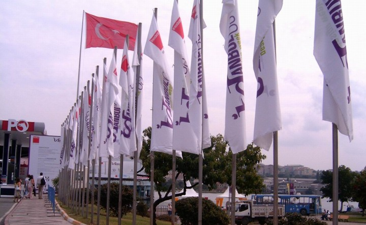
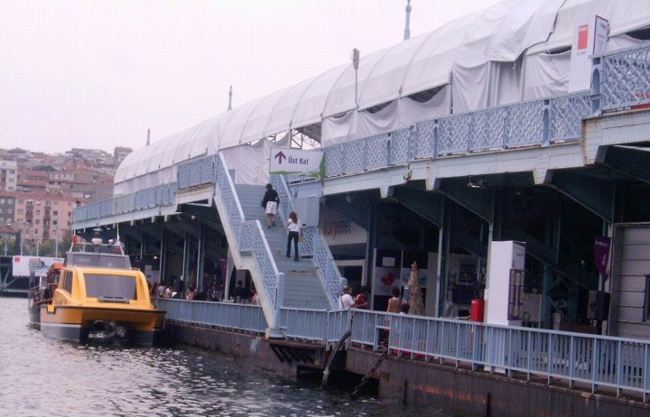
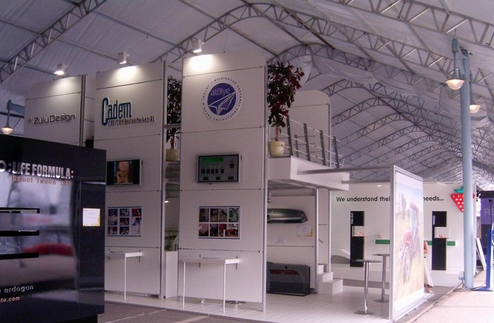
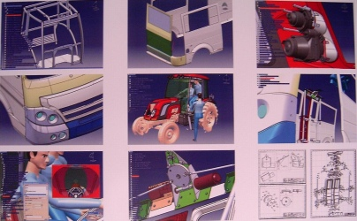
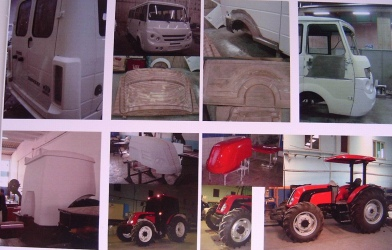
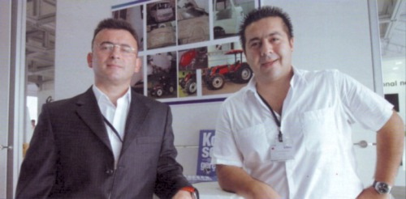
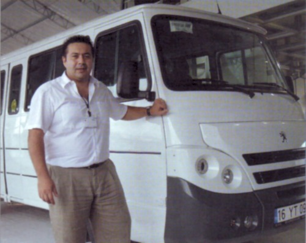
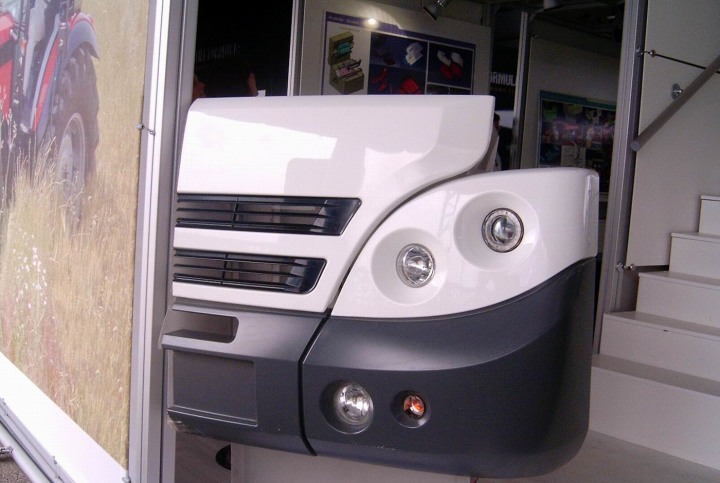
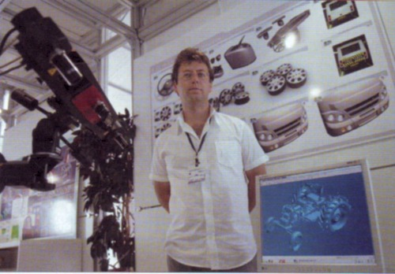

Not: Ýlk defa TurkCADCAM.net
Dergisi Ocak-Þubat 2006 Sayýsýnda yer almýþ bu yazý,
ek resimlerle birlikte Haziran 2008'de TurkCADCAM.net portalýndan yayýnlanmaya baþlamýþtýr.
IDW (Istanbul Design Week) kapsamýnda düzenlenen ADesign 2005 Fuarý Ýstanbul Balat'da bulunan eski Galata Köprüsü'nde 13-20 Eylül 2005 tarihleri arasýnda gerçekleþtirildi.


Geçen senekilere kýyasla bu seneki ADesign Fuarý'nýn biraz sönük geçtiði söylenebilir. Belki IDW kapsamýna alýnmýþ olmasý ADesign Fuarý'nýn gölgelemiþ?.. Yine de birçok stantta yerli ürün tasarýmýnýn her geçen yýl geliþtiðinin göstergesi olan ürün ve teknolojiler sergileniyordu. Aþaðýda, ilginizi çekeceðinizi umduðumuz bazý stantlarýn fotoðraflarý ve yetkililerle yapýlan röportajlarý bulacaksýnýz:
ZuluDesign - Cadem A.Þ. - Atölye A.Þ.
Bu üç firmanýn ortak standý fuar giriþinde ziyaretçileri büyük bir stantla karþýlýyor; Stantta anahtar teslimi ürün geliþtirme projelerine iki ana örnek verilmiþ; Karsan için yenilenen Peguet J9 Premier ve Alçelik (Tümosan) için kabin ve kaportasý yeniden tasarlanýp üretilen bir traktör. Bu traktörün ürün geliþtirme aþamalarýna ait fotoðraflar ilk defa bu fuarda sergilendi. Aþaðýda ZuluDesign - Cadem A.Þ.- Atölye Tasarým A.Þ. standýnda yapýlan röportajlar yer almaktadýr.



Üç logo altýnda sergilediðiniz, ortak iþbirliðiyle tasarlanmýþ J9 Premier, Tümosan Traktör, tamponlar vs. var. Bu çalýþmalar nasýl baþladý?
Ali Serdar Emre, Genel Md., Cadem A.Þ.: Þimdi bir kere bu tarz bir yapýlanmanýn Türkiye'de bir ilk olduðunu söylemek istiyorum. Pazara baktýðýnýzda bireysel tasarýmcýlarý görebiliyorsunuz veya spesifik sektörlerde, otomotivde, bazý kiþi ya da kuruluþlarýn araçlarýn bazý kesimlerinin endüstriyel tasarýmýný yaptýklarýný veya bazý fabrikalarýn bazý parçalarda mühendislik çalýþmasý yaptýðýný ya da kalýp imalatçýlarýnýn, model imalatçýlarýnýn bazý kalýp veya modelleri yaptýðýný görebiliyorsunuz.
Fakat, bir aracýn hem endüstriyel hem de mühendislik tasarýmýný, hem de çalýþýr prototiplerinin ve analizlerini tek çatý altýnda gerçekleþtirebilen baþka bir özel kuruluþ yok.
Bu oluþumu tek bir firma olarak da görebilirsiniz. Ama ayrý ayrý uzmanlýk dallarýna böldük;
Endüstriyel tasarým safhasýnda, hem kendi içimizde yapacaðýmýz ürünlerin hem de dýþarýdaki firmalara yapýlacak tasarýmlarýn konsept görüntüleme ve fiziksel ön prototip kýsmýný ZuluDesign'da yapýyoruz.
Cadem A.Þ., mühendislik alanýnda faaliyet gösteriyor. Konsept tasarýmý bittikten sonra parçalarýn A Class yüzeylerini, detay tasarýmlarýný, montajlarýný, analizlerini ve en önemlisi de komple projenin yönetimini yapýyor.
Atölye A.Þ. ise Cadem'in mühendisliðini bitirdiði parçalarýn gerek fonksiyonel prototip gerek master model veya ön seri kalýp imalatýný yapýyor.
Dolayýsýyla bu üç firmanýn personeli zaten ortak ofisler kullanýyor. Üç firmamýzda toplam 40 civarýnda personelimiz var.

Solda: Ali Serdar Emre, Saðda: Zafer Uluçay
Burada göze çarpan iki ürün var. Birisi J9 Premier, diðeri Tümosan Traktör. Bunlardan da bahsedebilir miyiz?
Ali Serdar Emre: Peguet J9 Premier için yaklaþýk 2.5 yýl önce çalýþmalara baþladýk. Deðiþklikler parça parça yapýldý; Öncelik ön kýsým ardýndan arka ve paralelinde yan kýsýmlar tasarlandý. Paralelinde iç kýsým tasarýmý yürütüldü. Bunun endüstriyel tasarýmý ve mühendislik tasarýmý tamamen ZuluDesign ve Cadem A.Þ. firmalarýna ait. Prototiplerin yapýlmasýnda KARSAN'ýn prototip atölyesini kullandýk ama kalýplarý ve modelleri Atölye A.Þ. bünyesinde imal ettikten sonra KARSAN'a götürdük.


J9 Premier projesi sonlanmaya yakýn bir Tümosan Traktör geliþtirme çalýþmasýný baþlattýk. Alçelik firmasý yeni bir traktör tasarýmý ortaya koymak istedi. Bu projede, yaklaþýk 9 ay süre içinde birçok parçanýn seri üretim kalýplarý tamamlandý. Yaklaþýk bir ay içinde aracýn lansmaný yapýlacak. Alçelik firmasý bu Fuar'da resimlerini sergilemek üzere bize izin verdi. O vesile ile bu resimleri de sergileyebiliyoruz.
Bu üretim ve imalat aþamasýnda hangi CAD/CAM programlarýný kullandýnýz?
Ali Serdar Emre, Peguet J9 Premier Facelift Projesi'ne baþladýðýmýzda J9'larýn üç boyutlu modelleri yoktu. Fiziksel olarak araç ortada olduðun için bünyemizdeki 3D optik tarama sistemleri vasýtasýyla araç yüzeylerini milyonlarca noktadan oluþan dijital 3D model haline getirdik. Ardýndan CATIA V5 yazýlýmýnýn tersine mühendislik modüllerini de kullanarak bu nokta bulutu verisi 3D yüzey modeli haline getirildi.
Traktörün 3D optik taramasý hakkýnda bilgi verir misiniz?
Orkun Nuras, GOM Ürün Destek Mühendisi: Üç boyutlu tarama ve optik cihazlardan sorumlu kiþiyim. Tersine mühendislik konusunda çalýþýyorum. Aracýn var olan þasesinde üç boyutlu tarama ve sayýsallaþtýrma çalýþmalarýnda bulundum.
Bunun dýþýnda proje devam ettiði sürece yine ayný tarama cihazýyla, sistemin kalite kontrol konusundaki fonksiyonunu kullanarak kalite kontrol ölçümleri yaptýk. Böylece 3D CAD modellere kýyasla ne kadar doðru üretimler yapýldýðýný deðerlendirme fýrsatýmýz oldu.

Orkun Nuras ve ATOS II 3D optik tarama sistemi, ekranda traktör tarama verisi görülüyor.
J9 Premier ve Tümosan Traktör projelerine endüstriyel tasarýmcý olarak katkýlarýnýzýn yaný sýra burada sergilenmekte olan buharlý temizleyiciler hakkýnda da bilgi verir misiniz?
|